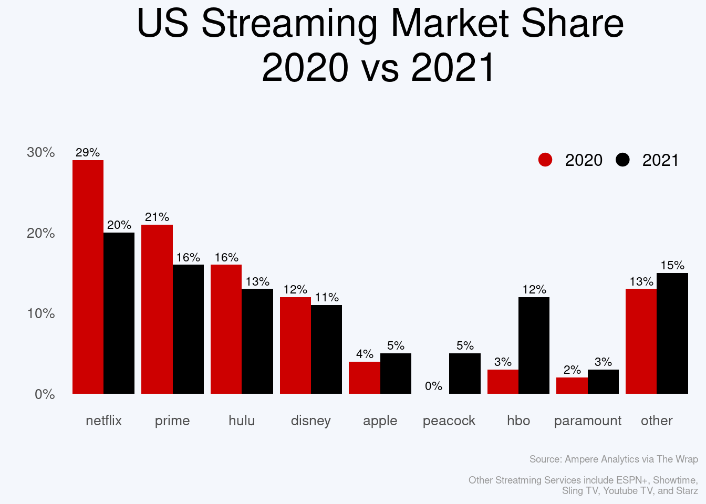
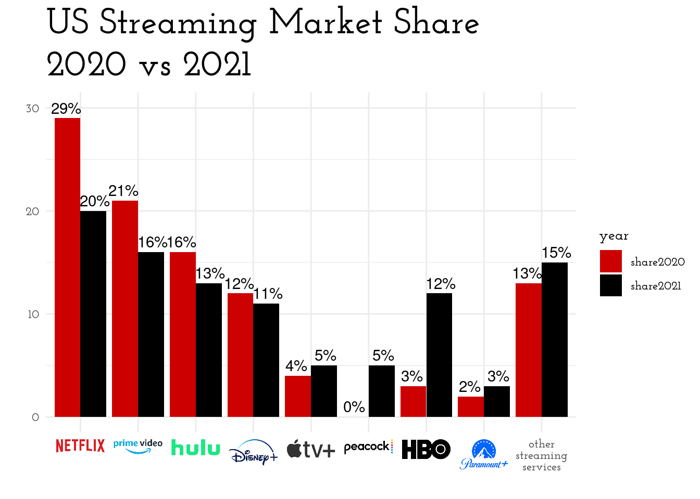
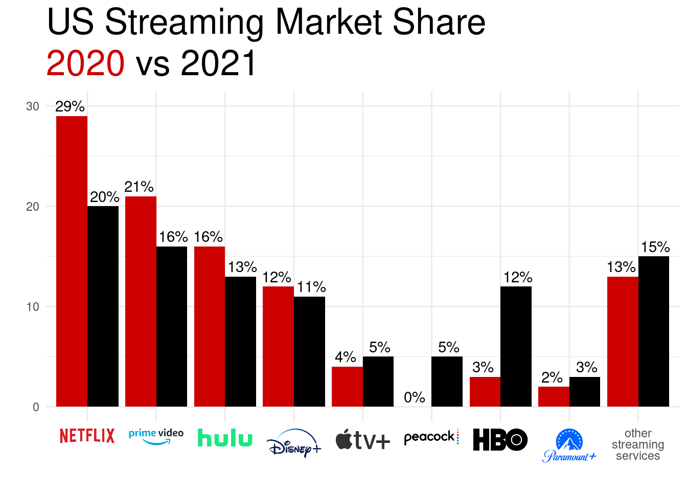
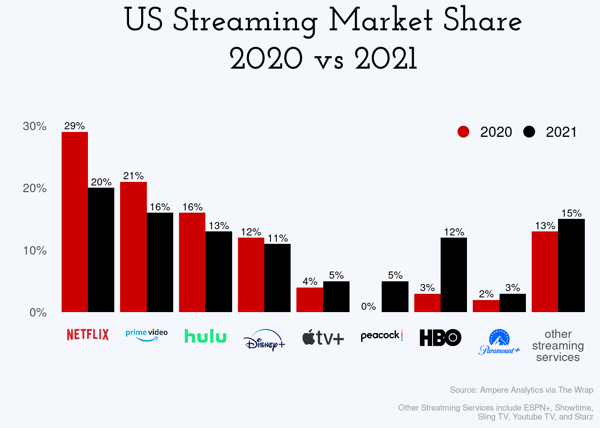
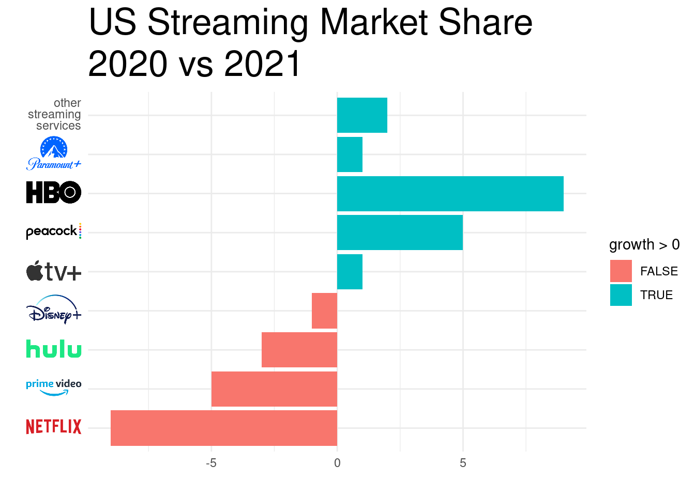

US Streaming Services Market Share, 2020 vs 2021
I saw this post on Reddit’s r/dataisbeautiful showing this plot
US Streaming Services Market Share, 2020 vs 2021
and thought it looked like a good candidate for trying out some plot improvement techniques.
I’ve played with adding images to plot axes several times (also here, here, here) so that part shouldn’t pose too much of a challenge. First, I’ll try to rebuild the original. The original was built in powerpoint but I’ll be reproducing it with R.
The data itself appears to be captured from something like this page (paywalled) but the precise values aren’t important; I’ll just take them directly from the original plot manually
streaming <- tibble::tribble(
~service, ~share2020, ~share2021,
"netflix", 29, 20,
"prime", 21, 16,
"hulu", 16, 13,
"disney", 12, 11,
"apple", 4, 5,
"peacock", 0, 5,
"hbo", 3, 12,
"paramount", 2, 3,
"other", 13, 15,
)I can build a simple barplot from this data with ggplot2. First we’ll need it in long format, with the services ordered as
they are in the original, and build a basic bar plot with dodged bars
library(ggplot2)
## pivot to long format with the year and share as their own columns
streaming_long <- tidyr::pivot_longer(streaming, cols = -service, names_to = "year", values_to = "share")
## plot the years side-by-side in the original order
p <- ggplot(streaming_long) +
geom_col(aes(factor(service, levels = streaming$service), share, fill = year), position = "dodge") +
## add the percentages just above each bar
geom_text(aes(service, share + 1, label = paste0(share, "%"), group = year), position = position_dodge(width = 1)) +
## use similar colours to the original
scale_fill_manual(values = c(share2020 = "red3", share2021 = "black")) +
labs(title = "US Streaming Market Share", subtitle = "2020 vs 2021", x = "", y = "") +
theme_minimal() +
theme(plot.title = element_text(size = 26), plot.subtitle = element_text(size = 26))
p That’s fairly close. For the logos I’ll use the versions on Wikipedia
logos <- tibble::tribble(
~service, ~logo,
"netflix", "https://upload.wikimedia.org/wikipedia/commons/thumb/0/08/Netflix_2015_logo.svg/340px-Netflix_2015_logo.svg.png",
"prime", "https://upload.wikimedia.org/wikipedia/commons/thumb/1/11/Amazon_Prime_Video_logo.svg/450px-Amazon_Prime_Video_logo.svg.png",
"hulu", "https://upload.wikimedia.org/wikipedia/commons/thumb/e/e4/Hulu_Logo.svg/440px-Hulu_Logo.svg.png",
"disney", "https://upload.wikimedia.org/wikipedia/commons/thumb/3/3e/Disney%2B_logo.svg/320px-Disney%2B_logo.svg.png",
"apple", "https://upload.wikimedia.org/wikipedia/commons/thumb/2/28/Apple_TV_Plus_Logo.svg/500px-Apple_TV_Plus_Logo.svg.png",
"peacock", "https://upload.wikimedia.org/wikipedia/commons/thumb/d/d3/NBCUniversal_Peacock_Logo.svg/440px-NBCUniversal_Peacock_Logo.svg.png",
"hbo", "https://upload.wikimedia.org/wikipedia/commons/thumb/d/de/HBO_logo.svg/440px-HBO_logo.svg.png",
"paramount", "https://upload.wikimedia.org/wikipedia/commons/thumb/a/a5/Paramount_Plus.svg/440px-Paramount_Plus.svg.png",
"other", "other"
)
labels <- setNames(paste0("<img src='", logos$logo, "' width='40' />"), logos$service)
labels[["other"]] <- "other<br />streaming<br />services"and leverage {ggtext} to set these as the axis labels
p <- p + scale_x_discrete(labels = labels) + theme(axis.text.x = ggtext::element_markdown())
p
My first thought on seeing this plot with the legend was that {ggtext} makes this a lot easier to read by using the
title as the legend
p <- p +
labs(subtitle = "<span style = 'color: red3;'>2020</span> vs 2021") +
theme(plot.subtitle = ggtext::element_markdown(), legend.position = "none")
p Next, this should possibly be a horizontal bar plot so that the labels read nicely
p +
coord_flip() +
scale_x_discrete(labels = labels, limits = rev(streaming$service)) +
theme(axis.text.y = ggtext::element_markdown())## Scale for 'x' is already present. Adding another scale for 'x', which will
## replace the existing scale. The ‘insight’ which this is trying to display is how each service’s share has grown or shrunk. It wasn’t obvious to me that the original was ordered by that - decreases shown first, then increases (in some order, I’m still not sure what). What might make for a better plot to center it on the 2020 share and show the growth (positive or negative)
streaming_delta <- dplyr::mutate(streaming, growth = share2021 - share2020)
p <- ggplot(streaming_delta) +
geom_col(aes(factor(service, levels = streaming$service), growth, fill = growth > 0)) +
labs(title = "US Streaming Market Share", subtitle = "2020 vs 2021", x = "", y = "") +
theme_minimal() + theme(plot.title = element_text(size = 26), plot.subtitle = element_text(size = 26)) +
scale_x_discrete(labels = labels) +
coord_flip() +
theme(axis.text.y = ggtext::element_markdown())
p Each comparison in the original required two bars, and the separation between the services didn’t make that easy to read. In this version, the absolute scale is lost (services starting high and decreasing aren’t so distinct from those starting low and gaining slightly) so what about using a barbell plot to show the separation between the two values rather than relying on comparing two bars?
suppressWarnings(library(ggalt, include.only = "geom_dumbbell", quietly = TRUE))## Registered S3 methods overwritten by 'ggalt':
## method from
## grid.draw.absoluteGrob ggplot2
## grobHeight.absoluteGrob ggplot2
## grobWidth.absoluteGrob ggplot2
## grobX.absoluteGrob ggplot2
## grobY.absoluteGrob ggplot2p <- ggplot(streaming) +
ggalt::geom_dumbbell(aes(factor(service, levels = rev(streaming$service)),
x = share2020, xend = share2021),
colour_x = "red3", size_x = 6,
colour_xend = "black", size_xend = 6,
size = 1, dot_guide = TRUE, dot_guide_size = 0.5, dot_guide_colour = "grey25") +
scale_y_discrete(labels = labels) +
labs(title = "US Streaming Market Share", x = "", y = "") +
labs(subtitle = "<span style = 'color: red3;'>2020</span> vs 2021") +
theme_minimal() +
theme(plot.title = element_text(size = 26), plot.subtitle = element_text(size = 26)) +
theme(axis.text.y = ggtext::element_markdown(), plot.subtitle = ggtext::element_markdown(), legend.position = "none")
p## Warning: Use of `streaming$service` is discouraged. Use `service` instead. I think these last two communicate more than the original. It’s always amazing how easy it is to bring this data into R and
start playing with different presentations.
I think these last two communicate more than the original. It’s always amazing how easy it is to bring this data into R and
start playing with different presentations.
## ─ Session info ───────────────────────────────────────────────────────────────
## setting value
## version R version 4.0.3 (2020-10-10)
## os Pop!_OS 20.10
## system x86_64, linux-gnu
## ui X11
## language en_AU:en
## collate en_AU.UTF-8
## ctype en_AU.UTF-8
## tz Australia/Adelaide
## date 2021-04-25
##
## ─ Packages ───────────────────────────────────────────────────────────────────
## package * version date lib source
## ash 1.0-15 2015-09-01 [1] CRAN (R 4.0.3)
## assertthat 0.2.1 2019-03-21 [1] CRAN (R 4.0.3)
## bitops 1.0-7 2021-04-24 [1] CRAN (R 4.0.3)
## blogdown 1.2 2021-03-04 [1] CRAN (R 4.0.3)
## bookdown 0.21 2020-10-13 [1] CRAN (R 4.0.3)
## callr 3.5.1 2020-10-13 [1] CRAN (R 4.0.3)
## cli 2.2.0 2020-11-20 [1] CRAN (R 4.0.3)
## colorspace 2.0-0 2020-11-11 [1] CRAN (R 4.0.3)
## crayon 1.3.4 2017-09-16 [1] CRAN (R 4.0.3)
## desc 1.2.0 2018-05-01 [1] CRAN (R 4.0.3)
## devtools 2.3.2 2020-09-18 [1] CRAN (R 4.0.3)
## digest 0.6.27 2020-10-24 [1] CRAN (R 4.0.3)
## dplyr * 1.0.2 2020-08-18 [1] CRAN (R 4.0.3)
## ellipsis 0.3.1 2020-05-15 [1] CRAN (R 4.0.3)
## evaluate 0.14 2019-05-28 [1] CRAN (R 4.0.3)
## extrafont 0.17 2014-12-08 [1] CRAN (R 4.0.3)
## extrafontdb 1.0 2012-06-11 [1] CRAN (R 4.0.3)
## fansi 0.4.1 2020-01-08 [1] CRAN (R 4.0.3)
## farver 2.0.3 2020-01-16 [1] CRAN (R 4.0.3)
## fs 1.5.0 2020-07-31 [1] CRAN (R 4.0.3)
## generics 0.1.0 2020-10-31 [1] CRAN (R 4.0.3)
## ggalt * 0.4.0 2017-02-15 [1] CRAN (R 4.0.3)
## ggplot2 * 3.3.3 2020-12-30 [1] CRAN (R 4.0.3)
## ggtext 0.1.1 2020-12-17 [1] CRAN (R 4.0.3)
## glue 1.4.2 2020-08-27 [1] CRAN (R 4.0.3)
## gridtext 0.1.4 2020-12-10 [1] CRAN (R 4.0.3)
## gtable 0.3.0 2019-03-25 [1] CRAN (R 4.0.3)
## htmltools 0.5.0 2020-06-16 [1] CRAN (R 4.0.3)
## KernSmooth 2.23-18 2020-10-29 [4] CRAN (R 4.0.3)
## knitr 1.30 2020-09-22 [1] CRAN (R 4.0.3)
## labeling 0.4.2 2020-10-20 [1] CRAN (R 4.0.3)
## lifecycle 0.2.0 2020-03-06 [1] CRAN (R 4.0.3)
## magrittr 2.0.1 2020-11-17 [1] CRAN (R 4.0.3)
## maps 3.3.0 2018-04-03 [1] CRAN (R 4.0.3)
## markdown 1.1 2019-08-07 [1] CRAN (R 4.0.3)
## MASS 7.3-53 2020-09-09 [4] CRAN (R 4.0.2)
## memoise 1.1.0 2017-04-21 [1] CRAN (R 4.0.3)
## munsell 0.5.0 2018-06-12 [1] CRAN (R 4.0.3)
## pillar 1.4.7 2020-11-20 [1] CRAN (R 4.0.3)
## pkgbuild 1.2.0 2020-12-15 [1] CRAN (R 4.0.3)
## pkgconfig 2.0.3 2019-09-22 [1] CRAN (R 4.0.3)
## pkgload 1.1.0 2020-05-29 [1] CRAN (R 4.0.3)
## png 0.1-7 2013-12-03 [1] CRAN (R 4.0.3)
## prettyunits 1.1.1 2020-01-24 [1] CRAN (R 4.0.3)
## processx 3.4.5 2020-11-30 [1] CRAN (R 4.0.3)
## proj4 1.0-10.1 2021-01-26 [1] CRAN (R 4.0.3)
## ps 1.5.0 2020-12-05 [1] CRAN (R 4.0.3)
## purrr 0.3.4 2020-04-17 [1] CRAN (R 4.0.3)
## R6 2.5.0 2020-10-28 [1] CRAN (R 4.0.3)
## RColorBrewer 1.1-2 2014-12-07 [1] CRAN (R 4.0.3)
## Rcpp 1.0.5 2020-07-06 [1] CRAN (R 4.0.3)
## RCurl 1.98-1.3 2021-03-16 [1] CRAN (R 4.0.3)
## remotes 2.2.0 2020-07-21 [1] CRAN (R 4.0.3)
## rlang 0.4.10 2020-12-30 [1] CRAN (R 4.0.3)
## rmarkdown 2.6 2020-12-14 [1] CRAN (R 4.0.3)
## rprojroot 2.0.2 2020-11-15 [1] CRAN (R 4.0.3)
## Rttf2pt1 1.3.8 2020-01-10 [1] CRAN (R 4.0.3)
## scales 1.1.1 2020-05-11 [1] CRAN (R 4.0.3)
## sessioninfo 1.1.1 2018-11-05 [1] CRAN (R 4.0.3)
## stringi 1.5.3 2020-09-09 [1] CRAN (R 4.0.3)
## stringr 1.4.0 2019-02-10 [1] CRAN (R 4.0.3)
## testthat 3.0.1 2020-12-17 [1] CRAN (R 4.0.3)
## tibble 3.0.4 2020-10-12 [1] CRAN (R 4.0.3)
## tidyr 1.1.2 2020-08-27 [1] CRAN (R 4.0.3)
## tidyselect 1.1.0 2020-05-11 [1] CRAN (R 4.0.3)
## usethis 2.0.0 2020-12-10 [1] CRAN (R 4.0.3)
## vctrs 0.3.6 2020-12-17 [1] CRAN (R 4.0.3)
## withr 2.3.0 2020-09-22 [1] CRAN (R 4.0.3)
## xfun 0.22 2021-03-11 [1] CRAN (R 4.0.3)
## xml2 1.3.2 2020-04-23 [1] CRAN (R 4.0.3)
## yaml 2.2.1 2020-02-01 [1] CRAN (R 4.0.3)
##
## [1] /home/jono/R/x86_64-pc-linux-gnu-library/4.0
## [2] /usr/local/lib/R/site-library
## [3] /usr/lib/R/site-library
## [4] /usr/lib/R/library